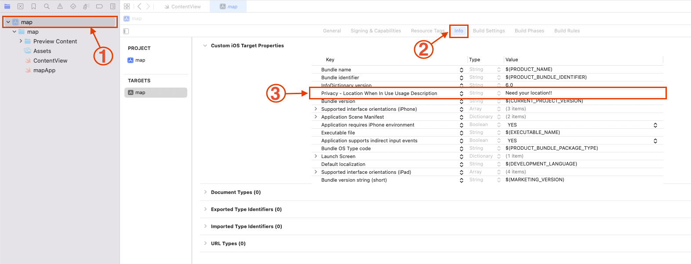
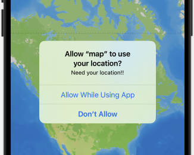
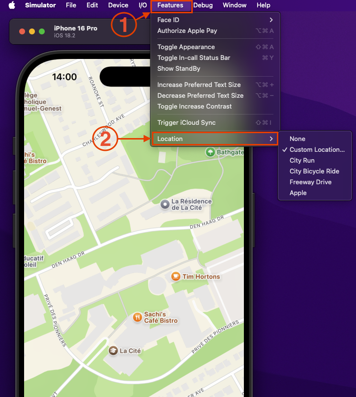

MapKit est un framework d'Apple qui permet d'intégrer des cartes dans une application iOS. Il est basé sur le service de cartographie d'Apple, qui est similaire à Google Maps. MapKit fournit des classes pour afficher des cartes, des annotations, des itinéraires, etc. Il est très facile à utiliser et offre de nombreuses fonctionnalités pour personnaliser l'apparence des cartes.
Pour travailler avec des cartes dans SwiftUI, il faut importer le framework MapKit, qui fournit toutes les classes et vues nécessaires :
import MapKitLa vue Map de SwiftUI permet d’afficher une carte interactive dans votre interface :
struct ContentView: View {
var body: some View {
Map()
}
}• Map() : Crée une carte interactive.
MapKit offre de nombreuses options pour personnaliser l’apparence des cartes, y compris le style, les contrôles, les marqueurs, les annotations, etc.
La position de la caméra permet de définir la région affichée sur la carte :
struct ContentView: View {
let cameraPosition: MapCameraPosition = .region(.init(center: .init(latitude: 45.439857, longitude: -75.627043), latitudinalMeters: 400, longitudinalMeters: 400))
var body: some View {
Map(initialPosition: cameraPosition)
}
}Le modificateur .mapStyle(_:) permet de choisir le style de la carte :
struct ContentView: View {
var body: some View {
Map()
.mapStyle(.satellite)
}Les contrôles de carte permettent d’ajouter des boutons et des vues interactives à la carte :
struct ContentView: View {
var body: some View {
Map()
.mapStyle(.hybrid)
.mapControls {
MapUserLocationButton()
MapCompass()
MapPitchToggle()
MapScaleView()
}
}
}Les marqueurs sont des points d’intérêt qui peuvent être affichés sur la carte :
struct ContentView: View {
var body: some View {
Map {
Marker("La Cite", coordinate: CLLocationCoordinate2D(latitude: 45.439857, longitude: -75.627043))
}
}
}Les annotations sont des vues personnalisées qui peuvent être affichées sur la carte :
struct ContentView: View {
var body: some View {
Map {
Annotation("La Cite", coordinate: CLLocationCoordinate2D(latitude: 45.439857, longitude: -75.627043), anchor: .center) {
Image(systemName: "graduationcap.fill")
.resizable()
.aspectRatio(contentMode: .fit)
.foregroundStyle(.white)
.frame(width: 20, height: 20)
.padding(7)
.background(.pink.gradient, in: .circle)
}
}
}
}MapKit permet d’accéder à la position de l’utilisateur en utilisant le gestionnaire de localisation (CLLocationManager) :
Il faut ajouter une clé NSLocationWhenInUseUsageDescription dans le fichier Info.plist pour demander l’autorisation d’utiliser la localisation :
Le gestionnaire de localisation permet de suivre la position de l’utilisateur :
struct ContentView: View {
let locationManager = CLLocationManager()
var body: some View {
Map {
UserAnnotation()
}
.onAppear {
locationManager.requestWhenInUseAuthorization()
}
}
}Lorsque l'utilisateur utilisera l'application pour la première fois un message lui sera afficher lui demandant d'autoriser la localisation
A la base l'emulateur n'a pas de gps d'integrer mais il est tout de meme posible de simuler une position. Pour cela, il faut sélectionner une position dans le menu Features > Location :
